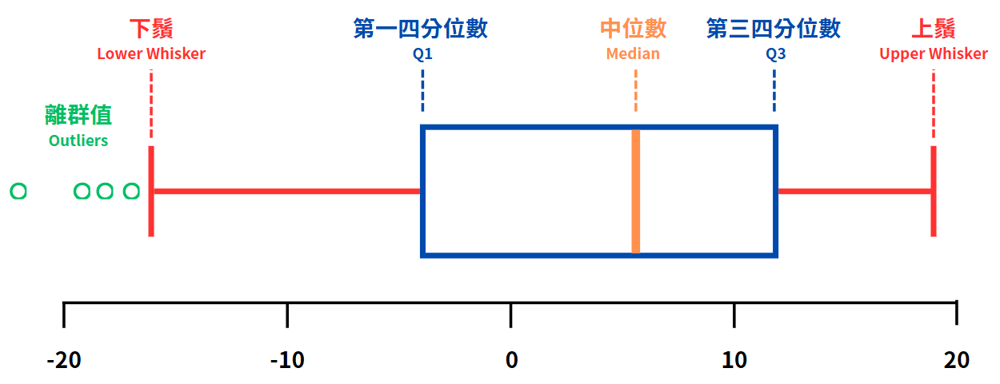
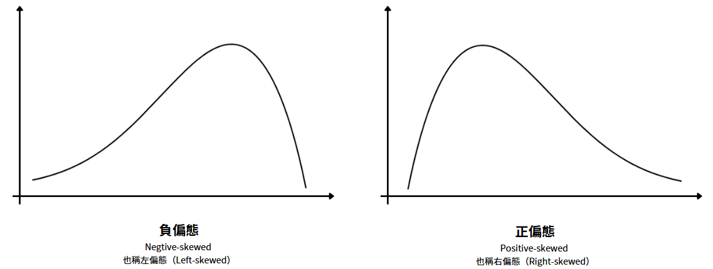
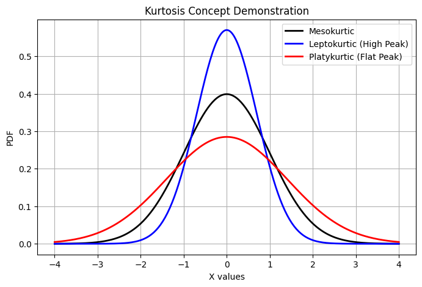
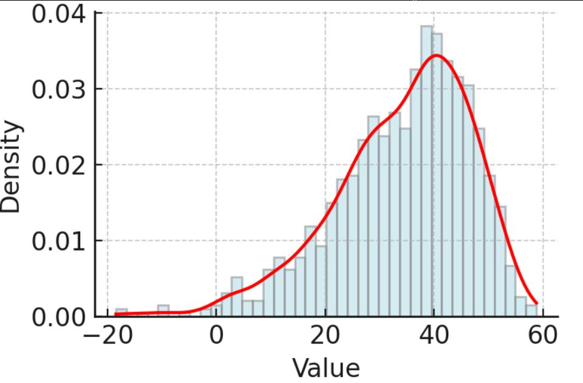
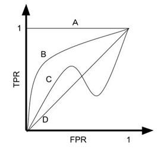

大數據處理分析與應用 — 考前重點 + 歷屆試題解析
iPAS AI 應用規劃師｜考前重點忠實取自官方學習指引，試題逐題完整收錄、官方答案 + 學習解析
區一：考前重點（Cram Sheet）
3.1 敘述性統計與資料摘要技術
（1）集中趨勢（Central Tendency）
| 指標 | 意義與適用 | 特性 |
|---|---|---|
| 算術平均（Mean） | 總和÷筆數，反映整體水準 | 計算直覺；對極端值敏感 |
| 幾何平均（Geometric） | 成長率、報酬率等乘積效應 | 需全部為正值，不可有負或零 |
| 調和平均（Harmonic） | 速率、效率類（如平均速度） | 不可有零或負值 |
| 眾數（Mode） | 出現頻率最高值；類別資料佳 | 連續資料需先分桶 |
| 中位數（Median） | 排序後中間值 | 對極端值不敏感，偏態資料首選 |
（2）離散程度（Variability）
- 變異數 σ²：資料偏離平均的程度；標準差 σ：變異數平方根，單位與原資料相同。σ 大→分散；σ 小→集中。對離群值敏感。
- 全距（Range）：最大值−最小值，受單一極端值影響大。
- 四分位距 IQR = Q3 − Q1：中間 50% 資料範圍；對離群值穩健。Q1=25%、Q2=中位數=50%、Q3=75%。

（官方學習指引 第 3-8 頁）
（3）分佈形狀 — 偏度與峰度
| 指標 | 數值 | 意義 |
|---|---|---|
| 正偏態（右偏 Right-skewed） | Skewness > 0 | 右尾長，主體偏左；如收入、房價（少數高值拉高平均） |
| 負偏態（左偏 Left-skewed） | Skewness < 0 | 左尾長，主體偏右 |
| 對稱 | Skewness ≈ 0 | 近似常態 |
| 高峰 Leptokurtic | Kurtosis > 3 | 尖峰重尾、極端值多 |
| 中峰 Mesokurtic | Kurtosis ≈ 3 | 近似常態（Pearson 定義基準 3） |
| 扁平 Platykurtic | Kurtosis < 3 | 平坦輕尾、極端值少 |

（官方學習指引 第 3-11 頁）

（官方學習指引 第 3-12 頁）
3.2 機率分佈與資料分佈模型
常見機率分佈速查
| 分佈 | 型態 | E(X) | Var(X) | 用途 |
|---|---|---|---|---|
| 伯努利 Bernoulli | 離散 | p | p(1−p) | 單次二元試驗（成功/失敗） |
| 二項 Binomial | 離散 | np | np(1−p) | n 次獨立試驗成功次數 |
| 泊松 Poisson | 離散 | λ | λ | 固定時間/空間內事件發生次數（如來電量） |
| 常態 Normal | 連續 | μ | σ² | 鐘形對稱；中央極限定理基礎 |
| 指數 Exponential | 連續 | 1/λ | 1/λ² | 事件間隔/等待時間；具無記憶性 |
| 卡方 Chi-square | 連續 | k | 2k | 適配度/獨立性檢定；k=自由度 |
3.3 假設檢定與統計推論
| 分支 | 目的 | 輸出 |
|---|---|---|
| 參數估計 | 推測母體參數的值或區間 | 點估計 + 信賴區間（如 95% CI） |
| 假設檢定 | 驗證某主張是否成立 | 檢定統計量、p 值，依 α 決策 |
型一 / 型二錯誤
| H₀ 為真 | H₀ 為假 | |
|---|---|---|
| 保留 H₀ | 正確（1−α） | 型二錯誤 β（漏判） |
| 拒絕 H₀ | 型一錯誤 α（誤判/偽陽性） | 正確＝檢定力 1−β |
檢定方法選擇對照
| 情境 | 方法 |
|---|---|
| 一組樣本 vs 已知值 | 單樣本 t 檢定 |
| 兩組獨立樣本平均 | 獨立樣本 t 檢定（變異數不等用 Welch） |
| 同一批人前後測（差值） | 成對/配對樣本 t 檢定 |
| 三組以上平均 | 單因子變異數分析 ANOVA（顯著需事後檢定 Tukey） |
| 兩組比例 | 雙樣本比例 Z 檢定 |
| 類別變數關聯/分佈 | 卡方檢定（獨立性 / 適合度，期望頻數 ≥5） |
| 兩連續變數線性關係 | 皮爾森相關（需常態、線性） |
| 順序/非常態/有離群值 | 斯皮爾曼等級相關、Mann-Whitney U、Kruskal-Wallis |
| 母體標準差已知 | Z 檢定（而非 t 檢定） |
4.1 數據收集與清理
| 資料來源 | 特性 / 蒐集方式 |
|---|---|
| 感測器/IoT | 高頻、連續、時間序列；MQTT、Kafka 串流 + 邊緣運算 |
| 系統日誌/行為紀錄 | 半/非結構化；Flume、Logstash、NiFi |
| API/外部交換 | JSON、XML；RESTful + ETL（Airflow、Talend） |
| 網路爬蟲/開放資料 | Scrapy、BeautifulSoup；品質參差需清理 |
| 企業內部系統 | ERP/CRM/POS 結構化；批次匯出 + 資料倉儲 |
4.2 數據儲存與管理
| 資料型態 | 儲存方式 |
|---|---|
| 結構化（表格/ERP/CRM） | 關聯式 RDBMS（MySQL、PostgreSQL）；支援 SQL、ACID |
| 半結構化（JSON/XML） | 文件型 NoSQL（MongoDB）、ElasticSearch、資料湖 |
| 非結構化（文字/影像/音訊） | 物件儲存（S3、MinIO）、分散式檔案系統（HDFS）+ metadata |
資料湖（Data Lake）：原始格式儲存、多型態、Schema-on-Read（讀取時才套結構）。資料湖倉（Lakehouse）：結合湖的彈性 + 倉儲的結構化治理（Delta Lake、Iceberg、Hudi）。
一致性策略：強一致性（即時最新，金融交易）vs 最終一致性（容許延遲，S3/HDFS 高可用）。
4.3 數據處理技術與工具
資料準備與轉換
- 分箱（Binning）：等寬、等頻（分位數）、K-Means 分箱。
- 編碼：Label Encoding（有序，誤用於無序會產生虛假順序）、One-Hot（無序，高基數會維度爆炸）、Target Encoding（高基數、與目標相關；需防資料洩漏）。
- 縮放：Min-Max（壓至 0–1，對極端值敏感）、Z-score 標準化（平均 0 標準差 1）、Robust Scaling（用中位數與 IQR，對離群值穩健）。
| 分散式框架 | 特性 |
|---|---|
| Hadoop (MapReduce) | 批次處理、成熟穩定容錯強、速度慢 |
| Spark | 記憶體內運算、快、支援批次/即時/ML（MLlib） |
| Flink | 原生即時串流、低延遲、狀態管理佳 |
| Beam | 統一批次+串流抽象模型、可移植多後端 |
5.1 統計學在大數據中的應用
5.2 常見大數據分析方法
- 近似統計（在容忍誤差內快速估算）：t-digest（分位數/中位數）、Histogram Sketch、Count-Min Sketch（頻率）、Welford's Method（線上均值/變異數）。平台：Spark
approxQuantile()、BigQueryAPPROX_QUANTILES()。 - 時序分析：移動平均、指數平滑（趨勢平滑）；ARIMA、SARIMA（統計建模）；Prophet、LSTM/Transformer（進階預測）。
- 網路/圖分析：節點(Node)、邊(Edge)；中心性（Degree、Betweenness、Closeness、PageRank）；社群偵測（Louvain、Label Propagation）；鏈結預測。「按讚」等帶屬性互動宜存為邊的屬性。知識圖譜宜用 RDF 三元組（主-謂-賓）。
- 文字分析：預處理（斷詞 Tokenization、去停用詞、詞形還原 Lemmatization 考慮詞性、詞幹提取 Stemming 截斷）；特徵（TF-IDF 突顯關鍵詞抑制常見詞、Word2Vec/GloVe、BERT）；任務（情感分析、NER 命名實體識別、LDA 主題）。
- 地理空間：點/線/面資料；空間異質性（GWR）、空間自相關；KDE 熱點、DBSCAN、Getis-Ord Gi*。工具 GeoPandas、PostGIS、Apache Sedona。
- 異常偵測：Z-score/IQR、LOF、KNN、Isolation Forest、Random Cut Forest。應用：信用卡詐欺、設備故障、入侵偵測。
- 降維：PCA（線性，保留最大變異；須先標準化避免大量級欄位主導）、SVD（可分解長方形矩陣，LSA 應用）。
- 關聯規則：Apriori；支援度 Support=P(A∩B)、信賴度 Confidence=P(B|A)、提升度 Lift=P(A∩B)/[P(A)P(B)]（=1 獨立、>1 正相關、<1 負相關）。
5.3 數據可視化工具
| 目的 | 圖表 |
|---|---|
| 數值分佈 | 直方圖、箱型圖（異常值單獨標記）、KDE 曲線 |
| 變數關聯 | 散佈圖、相關係數矩陣、熱力圖（Heatmap） |
| 類別比較/比例 | 長條圖、堆疊長條圖、圓餅圖（≤5–6 類） |
| 時間趨勢 | 折線圖 |
6.1 大數據與機器學習
6.2/6.3 鑑別式 / 生成式 AI 應用
| 鑑別式 AI | 生成式 AI | |
|---|---|---|
| 核心 | 分類、預測、決策邊界 | 學習表徵後產生新內容 |
| 資料需求 | 標註標準格式 | 開放、語意驅動、語料多元 |
| 常見模型 | 邏輯迴歸、隨機森林、XGBoost、CNN、GNN | LLM、Diffusion、GAN、Transformer |
| 關鍵挑戰 | 不平衡、標註成本、樣本偏差 | 多樣性、代表性/偏誤、品質、時效性 |
6.4 大數據隱私保護、安全與合規
| 技術 | 說明 |
|---|---|
| 遮蔽 Masking | 部分替換（王○○）；易被推測還原 |
| 雜湊 Hashing | 單向不可逆（SHA-256）；短 ID 易遭彩虹表 |
| 泛化 Generalization | 降精度（1987-03-12→1980 年代） |
| 分桶 / 隨機擾動 | 離散區間 / 加噪音（保留統計特性） |
| K-匿名 / L-多樣性 / T-接近性 | 準識別欄至少 K-1 筆相同；敏感欄多樣性；分佈接近 |
| 差分隱私 DP | 加嚴格控制噪音，提供數學保證；可組合可量化 |
| 聯邦學習 Federated | 本地訓練僅傳參數，原始資料不外洩 |
| 同態加密 HE | 加密狀態下直接運算，解密結果與明文一致；雲端不解密即可計算 |
易混淆觀念對照表
| A | B | 關鍵差異 |
|---|---|---|
| 敘述統計 | 推論統計 | 整理呈現資料 vs 由樣本推估母體 |
| 平均數 | 中位數 | 對極端值敏感 vs 穩健（偏態用中位數） |
| 顯著水準 α | p 值 | 事前門檻 vs 事後計算機率 |
| 型一錯誤 | 型二錯誤 | 誤判（無差判有差/偽陽 α）vs 漏判（有差判無差 β） |
| Label Encoding | One-Hot Encoding | 有序類別 vs 無序類別（高基數爆炸） |
| Min-Max / Z-score | Robust Scaling | 對極端值敏感 vs 用中位數+IQR 穩健 |
| 強一致性 | 最終一致性 | 即時最新 vs 容許短暫延遲 |
| 資料湖 | 資料倉儲 | 原始多型態 Schema-on-Read vs 結構化預定義 |
| Lemmatization | Stemming | 還原詞典形（考慮詞性）vs 截斷詞幹 |
| Accuracy | PR-AUC / Recall / F1 | 不平衡資料下 Accuracy 失效，需後者 |
| 獨立樣本 t 檢定 | 成對樣本 t 檢定 | 不同個體兩組 vs 同一批前後測差值 |
| 匿名化 | 同態加密 | 去除/模糊識別資訊 vs 密文上直接運算 |
常見計算 / 公式速查
| 項目 | 公式 / 規則 |
|---|---|
| Z 分數 | Z = (x − μ) / σ |
| 標準差 | σ = √[ Σ(xᵢ−μ)² / N ] |
| IQR / 離群值界 | IQR=Q3−Q1；下界 Q1−1.5×IQR、上界 Q3+1.5×IQR |
| 二項 E/Var | E=np、Var=np(1−p)；常態近似條件 np≥5 且 n(1−p)≥5 |
| 卜瓦松 / 指數 | Poisson E=Var=λ；Exponential E=1/λ、Var=1/λ² |
| 卡方 E/Var | E=k、Var=2k（k 為自由度） |
| 提升度 Lift | Lift = P(A∩B)/[P(A)×P(B)]；=1 獨立 |
| 檢定力 | Power = 1 − β |
| 決策規則 | p ≤ α → 拒絕 H₀；p > α → 無法拒絕 H₀ |
114 年第二梯次 中級 第二科 大數據處理分析與應用（50 題）
考試日期：114 年 11 月 08 日｜選擇題 + 程式題，官方答案逐題照列。
1.若某數據點的 Z 分數（Z-Score）= 2，請問代表下列哪一種意涵？
- (A) 代表該數據點之原始數值為 2
- (B) 該數據點比平均值低 2 個標準差
- (C) 代表數據為異常值
- (D) 該數據點比平均值高 2 個標準差
2.使用 Python 的 pandas 處理商品銷售數據（變數 df）時，若需計算「總銷售額」欄位的敘述性統計量（平均值、標準差等），應使用下列哪一種語法？
- (A) df['總銷售額'].sum()
- (B) df['總銷售額'].describe()
- (C) df['總銷售額'].sort_values()
- (D) df['總銷售額'].stats()
describe() 一次回傳 count、mean、std、min、四分位數、max 等敘述統計。(A) 僅總和、(C) 排序、(D) 無此方法。3.附圖為某資料之分佈圖，此圖資料之偏態（Skewness）值較有可能為下列哪個選項？

- (A) Skewness < 0
- (B) Skewness > 0
- (C) Skewness = 0
- (D) 無法計算 Skewness
4.累積分佈函數（CDF）可用於描述隨機變數的機率分佈特性，其數學定義為下列何者？
- (A) PDF 的平均值
- (B) PDF 的積分
- (C) PDF 的離散總和
- (D) PDF 的標準差
5.在資料前處理時，若使用 Label Encoding 將類別變數轉為數字型態，下列何者為最常見的潛在風險？
- (A) 無法處理缺值
- (B) 會引入類別之間的虛假順序關係
- (C) 無法擴展至新資料
- (D) 記憶體佔用過高
6.關於類別型與數值型資料格式的處理，下列敘述何者「不正確」？
- (A) One-Hot 編碼將類別轉為多維二元向量，適用無序類別，但高基數下可能維度爆炸
- (B) Label Encoding 以整數表示類別，若用於無序資料可能被誤解為數值大小關係
- (C) 標準化使平均為 0、標準差為 1，可改善距離型演算法收斂速度，並同時將數值範圍壓縮至 0 至 1 之間
- (D) 對連續變數分箱可提升可解釋性，但分段未依分佈設計可能造成資訊損失或邊界偏誤
7.在資料庫 ACID 特性中，下列何者為「原子性（Atomicity）」的正確定義？
- (A) 所有資料欄位必須為相同型別
- (B) 每次交易需以批次方式執行
- (C) 交易不可分割，需完全成功或完全失敗
- (D) 系統會自動同步交易資料至所有節點
8.資料科學家利用「銷售金額」與「瀏覽次數」計算新變數「銷售金額/瀏覽次數」，此動作屬於哪一類特徵工程方法？
- (A) 特徵選擇
- (B) 特徵衍生
- (C) 特徵轉換
- (D) 分箱處理
9.在數值特徵標準化時，若資料中存在極端值（Outliers），下列哪一種方法最適合使用？
- (A) Min-Max 正規化
- (B) Z-score 標準化
- (C) 穩健縮放（Robust Scaling）
- (D) 標準分箱
10.下列哪一種情境最適合應用異常偵測（Anomaly Detection）技術？
- (A) 根據歷史銷售預測旺季供貨短缺以調整庫存
- (B) 透過信用風險模型預測顧客是否違約以輔助核貸
- (C) 即時分析金融交易流，偵測與平常明顯不同的可疑交易
- (D) 監控登入次數，預測次日登入量變化趨勢
11.若一家公司需即時監控大量物聯網裝置的異常行為，下列哪一種組合最適合？
- (A) 傳統關聯式資料庫 + 圖形視覺化
- (B) 批次資料處理 + 雲端備份
- (C) 大數據平台 + 即時資料分析技術
- (D) Word 文件 + 手動標註
12.處理分類問題時，若某類樣本數明顯少於其他類別，採用隨機過採樣（Random Oversampling）平衡資料比例，最常造成下列哪一種問題？
- (A) 增加過擬合風險
- (B) 降低模型收斂速度
- (C) 減少資料總筆數
- (D) 導致訓練資料欄位缺失
13.下列何者為同態加密（Homomorphic Encryption）技術的核心特性？
- (A) 將資料轉為匿名識別碼以隱藏身分
- (B) 對資料標準化以提升模型精度
- (C) 自動偵測與排除異常值
- (D) 可直接在加密狀態下進行數據運算
14.某組資料共 10 項標籤：A,A,A,A,A,B,B,B,B,B（僅 A、B 兩種），這組資料的「正規化吉尼不純度（Normalized Gini impurity）」為何？
- (A) 0
- (B) 0.42
- (C) 0.84
- (D) 1
15.客服中心平均每小時約 20 通來電，每分鐘來電數不固定（0、1、2…），事件彼此獨立、短時間發生機率與時間長短成正比。若要描述「每分鐘接到幾通來電」，下列哪一種分佈最適合？
- (A) 均勻分佈
- (B) 指數分佈
- (C) 卜瓦松分佈（Poisson）
- (D) 常態分佈
16.以 Z 分數監控交易異常，平均 2,000 元、標準差 400 元，某筆交易 3,200 元，以 |Z| ≥ 3 判為異常值，下列判斷何者最為正確？
- (A) 該筆 Z 分數為 3，應標記為異常值
- (B) Z 分數為 2.5，屬合理變異
- (C) Z 分數為 2，顯示標準差估計過高
- (D) Z 分數為 1.5，無須納入異常檢測
17.電商以「會員等級（一般、白金、黑卡）」建模，採梯度提升樹（Gradient Boosting Tree），特徵編碼時應特別注意下列何種情況？
- (A) 應優先 One-Hot Encoding，以減少類別相依性與記憶體
- (B) 直接 Label Encoding 可能使模型誤判類別間有順序，導致特徵重要性偏誤
- (C) Target Encoding 會自動消除過擬合風險
- (D) 類別少時建議先用 PCA 降維
18.分散式資料庫多節點交易時，若一節點錯誤但系統仍確保不出現部分更新、最終一致，下列何者最能說明此現象？
- (A) 原子性（Atomicity）確保交易全部成功或全部回復（Rollback）
- (B) 一致性（Consistency）確保完成後資料符合完整性規則
- (C) 隔離性（Isolation）避免多交易同時存取相同資料
- (D) 持久性（Durability）確保提交後結果永久保留
19.製造企業上萬台 IoT 感測器需毫秒級回應異常並保留完整資料供後續訓練，若希望兼顧即時性、資料完整性與可擴展性，下列哪種資料流程設計最符合？
- (A) 感測器→雲端 API Gateway→分散式資料庫→批次特徵工程→模型推論
- (B) 感測器→MQTT Broker→雲端資料倉儲→即時儀表板→模型再訓練
- (C) 感測器→邊緣運算節點→流式資料處理框架→雲端資料湖→模型推論
- (D) 感測器→本地快取層→RESTful API→雲端報表系統→模型批次更新
20.銀行欲將信用風險模型部署雲端，因敏感資料要求雲端服務商在「不解密原始資料」下仍能執行運算，最適合採用下列哪項技術？
- (A) 上傳前匿名化，僅保留可識別代碼供比對
- (B) 雜湊函數轉換，確保可追蹤但無法還原
- (C) 資料本地化，將所有訓練限於內部伺服器
- (D) 同態加密（Homomorphic Encryption），雲端直接在加密資料上運算，解密後結果與原始一致
21.依 Edward Tufte 的數據密度（Data Density）原則，要在單一頁面呈現多區域、多產品線銷售趨勢並讓主管快速掌握，下列哪種設計最符合？
- (A) 將每區域分成多張獨立折線圖避免重疊
- (B) 用顏色區分產品線，於同一圖整合多區域趨勢線，保持比例一致且標註清晰
- (C) 移除所有輔助線與標籤，僅留主要折線
- (D) 改為表格形式取代圖表
22.投資研究員欲以單一圖表快速呈現四檔股票報酬率間的關聯強度與方向，下列哪種視覺化最適合？
- (A) 為每檔股票各繪直方圖比較分佈
- (B) 任兩檔繪散佈圖加趨勢線
- (C) 雙軸折線圖同時顯示四檔股價
- (D) 熱力圖（Heatmap）配合相關係數矩陣
23.以單樣本 t 檢定檢驗「新策略後平均月銷售額是否與原本 100 萬不同」，α=0.05，結果 p=0.08，95% 信賴區間 [95 萬, 108 萬]。下列敘述何者正確？
- (A) 因 p < 0.05，可拒絕虛無假設
- (B) 若顯著水準改為 0.10，仍不顯著
- (C) 因 100 萬落在信賴區間內，無法拒絕虛無假設
- (D) 信賴區間寬度僅與顯著水準有關
24.企業以大量客服紀錄與產品評論（含非結構化文字、影像、表格）訓練語言模型，希望在不降效能下提升資料處理效率與一致性，下列哪種策略最適合？
- (A) 建立資料湖結構，以 Apache Spark 或 Ray 進行分散式預處理與特徵抽取，再串接訓練管線
- (B) 單節點高效能伺服器搭配批次模式集中執行清理
- (C) 將所有文字轉向量並以資料庫索引直接餵入訓練
- (D) 用生成式模型先自動清理資料再輸入下游
25.箱型圖顯示 IQR 極小但上鬚很長、高金額區有多筆離群值，欲凸顯不同消費層級差異，下列哪種視覺化最有助？
- (A) 以對數刻度繪製箱型圖或長條圖，放大高金額族群差異
- (B) 移除所有離群值確保集中分布
- (C) 採等距分箱分群
- (D) 改以折線圖觀察時間趨勢
26.串流影音平台用關聯規則學習：同時觀看兩類型者佔 12%，觀看科幻者中 50% 也看超英，Lift=1.8。下列推論何者最正確？
- (A) Support 過低，代表規則無任何商業價值
- (B) Lift > 1 表示兩類型無關，僅隨機重疊
- (C) Confidence 為 50%，代表觀看科幻者有明顯傾向觀看超英
- (D) 同時觀看僅 12%，代表兩類型互相排斥
27.每日上億筆交易採「近似分位數（Approximate Quantile）」摘要統計，下列何者最能正確反映該技術核心目的？
- (A) 確保每個分位值完全精確，即使計算較長
- (B) 利用機器學習模型預測分位數位置
- (C) 僅能對結構化資料批次處理，無法應用於即時資料流
- (D) 在可容忍誤差範圍內，快速估算分位值以支援即時分析
28.在高維度（>500 維）資料上用 DBSCAN，卻發現所有點皆被判為雜訊（Noise），最可能的原因為？
- (A) 高維下距離變化趨同，導致 ε（Epsilon）閾值選擇失效
- (B) 使用錯誤的距離函數
- (C) MinPts 參數設得太小
- (D) 資料過度標準化導致特徵消失
29.用 PCA 降維，輸入「交易金額(~10⁵)、交易次數(~10¹)、年齡(~10²)」，直接帶入後 PC1 幾乎由交易金額主導。下列何者最合理？
- (A) 正常現象，金額變異大應主導
- (B) 改用特徵選擇法可自動解決量級問題
- (C) 可刪除「交易金額」欄位以平衡影響
- (D) PCA 前應先標準化（Standardization），避免數值尺度差異造成特徵偏誤
30.欲衡量「廣告預算」與「銷售金額」線性關係的強度與方向（散佈圖明顯線性、無明顯離群值），下列哪種方法最適合？
- (A) 均方根誤差 RMSE
- (B) 共變異數（Covariance）
- (C) 皮爾森相關係數（Pearson）
- (D) 平均絕對誤差 MAE
31.每位顧客點擊視為伯努利試驗，p=0.4，推播 5,000 位顧客欲以常態分佈近似「成功點擊總數」分佈，下列哪項判斷最合理？
- (A) 因樣本數極大，可直接以常態分佈近似二項分佈
- (B) 只有當 np 與 n(1−p) 皆大於 5 時，才能以常態分佈作近似
- (C) 常態近似只適用於 p=0.5
- (D) 無論樣本數多大，二項分佈都不能以常態分佈近似
32.電信導入生成式 AI 客服，發現模型可能在回答中生成真實姓名、電話、交易資訊。為符合個資法與生成式 AI 安全隱私，下列哪項最符合實務與法規原則？
- (A) 訓練前進行匿名化或偽匿名化，並建立輸出內容稽核機制
- (B) 改以強化學習微調模型，使其學習避免產出真實資訊
- (C) 採同態加密加密所有文字輸入，確保模型無法辨識個資
- (D) 僅設定回覆時不顯示用戶姓名即可視為隱私防護完成
33.報酬率資料分佈明顯非對稱且多次極端損失，傳統常態假設模型無法準確反映風險，希望在不依賴常態假設下捕捉極端情況，下列哪種方法最合適？
- (A) 線性迴歸，以常態分佈殘差為基礎
- (B) 以平均數與標準差估計波動範圍
- (C) 將資料裁剪至 ±3σ 內以排除異常值
- (D) 分位數回歸（Quantile Regression），聚焦尾部分位以評估極端風險
34.圖形資料庫建模社群資料，每筆「按讚」含時間戳記與裝置類型，欲保留使用者與貼文互動關係並能查詢按讚屬性，下列哪種設計最合適？
- (A) 將「按讚」視為節點，與使用者建立邊
- (B) 將「按讚」資訊作為邊的屬性儲存，連結使用者與被按讚貼文節點
- (C) 把「按讚」資訊直接寫入使用者節點作為屬性
- (D) 建立「按讚紀錄表」存入關聯式資料庫
35.建構知識圖譜整合研究報告、專利與專家知識，支援語意查詢與關聯推理，希望良好語意擴展性與高效推理，下列哪種圖模型設計最合適？
- (A) 僅以節點與邊表示，所有資訊放在節點屬性
- (B) 將資料建為 RDF 三元組（Subject–Predicate–Object）
- (C) 用文件型資料庫儲存內容，以標籤連接節點
- (D) 關聯式資料庫儲存對應關係，搭配預建索引
36.線性迴歸分析 Y 與 X，Y 分佈明顯右偏且變異數隨 X 增大而增加（異質變異），為滿足模型假設並提升配適，下列哪種前處理最合適？
- (A) 對 X 進行標準化
- (B) 對 Y 進行 Box–Cox 轉換
- (C) 對資料進行一次差分
- (D) 將 Y 中變異較大的樣本移除
37.罕見疾病分類模型，確診樣本不到 1% 且短期無法取得更多資料，欲提升少數類偵測能力又避免過擬合，下列哪種策略最合理？
- (A) 對少數類隨機過採樣
- (B) 對多數類隨機欠採樣
- (C) 使用 SMOTE 生成合成少數類樣本後再訓練
- (D) 僅調整決策閾值以提升召回率
38.製造廠各抽 100 件，原線良率 95%、新線 97%，欲檢定兩條生產線良率差異是否具統計意義，下列哪種方法最合適？
- (A) 雙樣本平均數 t 檢定
- (B) 雙比例 Z 檢定（Two-proportion Z-test）
- (C) 卡方檢定
- (D) 變異數分析 ANOVA
39.腫瘤分類模型資料 80% 為良性，直接用 5-fold 交叉驗證可能造成評估偏差，為避免此問題，下列哪種作法最合適？
- (A) 降低 K 值以減少交叉驗證次數
- (B) 改用拔靴法（Bootstrap）
- (C) 調整測試集使良性比例更高以模擬真實分佈
- (D) 使用分層交叉驗證（Stratified K-Fold），確保每折類別比例一致
40.請參考附圖，下列虛擬程式碼（pseudocode）最可能是在描述何種驗證法？
Input：
- data_set：包含 N 筆資料的資料集
- model_training_function：用來訓練模型的函式
- model_evaluation_function：用來評估模型的函式（如計算誤差或準確率）
Output：
- 平均評估指標（如平均準確率或平均誤差）
Algorithm：
1. 初始化評估指標列表 metrics = []
2. 對 i = 1 到 N：
a. 將第 i 筆資料作為測試集 test_data
b. 將其餘 N-1 筆資料作為訓練集 train_data
c. 使用 model_training_function 在 train_data 上訓練模型
d. 使用訓練好的模型對 test_data 做預測，計算評估指標 metric_i
e. 將 metric_i 加入 metrics
3. 計算 metrics 的平均值 mean_metric
4. 回傳 mean_metric
- (A) Hold-out 驗證
- (B) 留一交叉驗證 LOOCV
- (C) K-fold 交叉驗證
- (D) 拔靴法（Bootstrap）驗證
41.請參考附圖，下列虛擬程式碼（pseudocode）最可能是在描述何種演算法？
Input：
- data_points：N 筆資料，每筆資料有 D 個特徵
- X：要分成的群數
Output：
- clusters：每筆資料所屬的群編號
- centroids：每個群的中心點
Algorithm：
1. 隨機選擇 X 個資料點作為初始中心
2. 重複以下步驟直到收斂：
a. 分群：
對每個資料點，計算它到每個中心的距離
將資料點指派給距離最近的中心
b. 更新中心：
對每個群：
計算該群中所有資料點的平均值
將群中心更新為這個平均值
3. 當群中心不再變動時，停止
回傳每筆資料的群編號 clusters，以及最後的群中心 centroids
- (A) K-means 分群
- (B) 高斯混合模型分群 GMM
- (C) 階層式分群
- (D) DBSCAN 分群
42.考慮某生產線每小時出現瑕疵品的個數符合卜瓦松分佈（Poisson Distribution），已知平均每小時產生 5 個瑕疵品，附圖程式碼展示資料處理，請問下列敘述何者正確？
import numpy as np from scipy.stats import poisson lambda_poisson = 5 print(poisson.pmf(5, lambda_poisson))
- (A) lambda_poisson = 5 表示每小時最多 5 個瑕疵品
- (B) poisson.pmf(5, lambda_poisson) 表示小於 5 個瑕疵品的機率
- (C) 卜瓦松分佈的適用條件為事件彼此獨立，且平均發生率固定
- (D) poisson.cdf(10, 5) 表示大於或等於 10 個瑕疵品的機率
一間遊戲市場研究公司正在分析全球電子遊戲銷售情況，並準備建立一份「熱銷遊戲銷售報告」。分析師取得了一份名為 vgsales.csv 的資料集，內容包含了全球銷量超過 10 萬份的電子遊戲清單。研究團隊希望透過這份資料，了解不同年份、平台與地區的銷售趨勢。資料集的欄位說明如下：
- Name：遊戲名稱
- Platform：遊戲平台（如 PS4、X360、Wii 等）
- Year：發售年份
- Genre：遊戲類型（如 Action、Sports、Role-Playing 等）
- Publisher：發行商名稱
- NA_Sales / EU_Sales / JP_Sales / Other_Sales：各地區銷售量（單位：百萬份）
- Global_Sales：全球總銷售量（單位：百萬份）
資料的欄位概觀如下：
import pandas as pd
import matplotlib.pyplot as plt
import seaborn as sns
# 載入資料
data = pd.read_csv("vgsales.csv")
data.head()| Rank | Name | Platform | Year | Genre | Publisher | NA_Sales | EU_Sales | JP_Sales | Other_Sales | Global_Sales | |
|---|---|---|---|---|---|---|---|---|---|---|---|
| 0 | 1 | Wii Sports | Wii | 2006.0 | Sports | Nintendo | 41.49 | 29.02 | 3.77 | 8.46 | 82.74 |
| 1 | 2 | Super Mario Bros. | NES | 1985.0 | Platform | Nintendo | 29.08 | 3.58 | 6.81 | 0.77 | 40.24 |
| 2 | 3 | Mario Kart Wii | Wii | 2008.0 | Racing | Nintendo | 15.85 | 12.88 | 3.79 | 3.31 | 35.82 |
| 3 | 4 | Wii Sports Resort | Wii | 2009.0 | Sports | Nintendo | 15.75 | 11.01 | 3.28 | 2.96 | 33.00 |
| 4 | 5 | Pokemon Red/Pokemon Blue | GB | 1996.0 | Role-Playing | Nintendo | 11.27 | 8.89 | 10.22 | 1.00 | 31.37 |
43.分析師在載入資料後，檢視 Year 欄位的資料型態，發現它是 float64，而非一般年份常用的整數。他想了解這樣的情形為什麼會發生。請問下列哪些原因可能導致這種狀況？
data['Year']
0 2006.0
1 1985.0
2 2008.0
3 2009.0
4 1996.0
...
16593 2002.0
16594 2003.0
16595 2008.0
16596 2010.0
16597 2003.0
Name: Year, Length: 16598, dtype: float64- 原因 A：CSV 檔中 Year 欄位有缺失值(NaN)，導致 Pandas 自動將整欄轉為浮點數。
- 原因 B：CSV 檔中的年份資料原本是字串(如 "2006")，Pandas 轉換時出錯而變成浮點數。
- 原因 C：Pandas 預設會將所有數值型態讀取為 float64，不論資料是否為整數。
- 原因 D：CSV 檔中的年份資料可能包含小數點(例如 2006.0)，因此被視為浮點數。
- (A) 原因 B、原因 C
- (B) 原因 A、原因 D
- (C) 原因 A、原因 B、原因 D
- (D) 原因 C、原因 D
44.研究團隊接下來想要將 Year 欄位轉換為整數型態，以便後續進行年份趨勢分析。考慮到資料中可能包含缺失值（NaN），請選出最合適的轉換方式。
- (A) data['Year'] = data['Year'].astype(int)
- (B) data['Year'] = data['Year'].fillna(0).astype(int)
- (C) data['Year'] = data['Year'].fillna(1).astype(int)
- (D) data['Year'] = data['Year'].astype('Int64')
'Int64'（大寫 I）允許保留 NaN（<NA>）並轉整數，不需填補錯誤值。(A) 對 NaN 會報錯；(B)(C) 用 0 或 1 填補會污染年份資料。45.為了觀察各遊戲平台的市場表現，分析師想要統計每個平台的全球銷售總額，並以長條圖呈現。請選出最能正確實現此分析的程式碼。
- (A) data.groupby("Platform")["Global_Sales"].sum().plot(kind="bar")
- (B) data.groupby("Platform")["Global_Sales"].count().plot(kind="bar")
- (C) data["Platform"].value_counts().plot(kind="bar")
- (D) data.groupby("Platform")["Global_Sales"].mean().plot(kind="bar")
sum()。(B) count 為筆數、(C) value_counts 為平台出現次數、(D) mean 為平均非總額。46.團隊希望比較北美、歐洲、日本及其他地區的整體銷售比例，並使用 seaborn 套件以長條圖的形式進行可視化分析。請選出能正確顯示這些地區銷售總額比例的程式碼。
- (A) sns.countplot(x=["NA_Sales","EU_Sales","JP_Sales","Other_Sales"], data=data)
- (B) sns.lineplot(x="Platform", y=["NA_Sales","EU_Sales","JP_Sales","Other_Sales"], data=data)
- (C) sns.barplot(x="variable", y="value", data=pd.melt(data, value_vars=["NA_Sales","EU_Sales","JP_Sales","Other_Sales"]), estimator=sum)
- (D) sns.histplot(data[["NA_Sales","EU_Sales","JP_Sales","Other_Sales"]])
pd.melt 將四個地區欄位轉為長格式（variable/value），再以 barplot 搭配 estimator=sum 對各地區加總繪長條圖。(A) countplot 計次、(B) lineplot 不適、(D) histplot 為分佈圖。47.研究團隊想要知道在北美地區（NA）銷售成績最好的遊戲前五名，並希望以 seaborn 的條狀圖呈現結果。請選出能正確完成這項分析的程式碼。
- (A) sns.barplot(x="NA_Sales", y="Name", data=data.head(5))
- (B) sns.barplot(x="Name", y="NA_Sales", data=data.nlargest(5, "NA_Sales"))
- (C) sns.lineplot(x="Name", y="NA_Sales", data=data.nlargest(5, "NA_Sales"))
- (D) sns.countplot(x="Name", y="NA_Sales", data=data)
nlargest(5, "NA_Sales") 取 NA 銷售前五名，再以 barplot 繪製。(A) head(5) 僅取前五列非前五名；(C) lineplot 不適合類別；(D) countplot 不能同時指定 x、y 為此用法。使用銷售資料集(marketing.csv)進行迴歸分析，附圖程式碼展示資料載入與處理。
import pandas as pd
df = pd.read_csv("marketing.csv")下圖顯示資料集的前 5 筆資料與相關資訊。
>>> df.head()
youtube facebook newspaper sales
0 276.12 45.36 83.04 26.52
1 53.40 NaN 54.12 12.48
2 20.64 55.08 83.16 11.16
3 181.80 49.56 70.20 22.20
4 216.96 12.96 70.08 15.48
>>> df.describe()
youtube facebook newspaper sales
count 200.000000 199.000000 200.000000 200.000000
mean 176.451000 27.820101 36.664800 16.827000
std 103.025084 17.808410 26.134345 6.260948
min 0.840000 0.000000 0.360000 1.920000
25% 89.250000 11.940000 15.300000 12.450000
50% 179.700000 27.000000 30.900000 15.480000
75% 262.590000 43.680000 54.120000 20.880000
max 355.680000 59.520000 136.800000 32.400000
48.根據上述結果，下列何者正確？
- (A) 資料集個數為 199 筆，變數個數為 4 個
- (B) sales 變數的中位數是 16.827
- (C) facebook 變數的第三四分位數(Q3) 是 11.94
- (D) youtube 變數的第一四分位數(Q1) 是 89.25
49.參考下圖計算各變數的遺漏值(NaN)個數結果，下列何者正確？
youtube 0 facebook 1 newspaper 0 sales 0 dtype: int64
- 選項 A：df.isnull().sum()
- 選項 B：df.isNaN().sum()
- 選項 C：df.isna().sum()
- 選項 D：df.isnan().sum()
- (A) 選項 D
- (B) 選項 B、選項 C、選項 D
- (C) 選項 A、選項 C
- (D) 選項 A、選項 B、選項 C
isnull() 與其別名 isna()，兩者等價。isNaN()、isnan() 非 Pandas DataFrame 方法（會報錯）。故正確為 A、C。50.考慮資料集已經填補遺漏值，參考下圖執行結果，下列何者正確？
from sklearn.linear_model import LinearRegression import statsmodels.api as sm X = df[['youtube', 'facebook', 'newspaper']] y = df['sales'] reg = 空格1 print(reg.coef_) X2 = sm.add_constant(X) model_sm = 空格2 print(model_sm.summary())
OLS Regression Results
==============================================================================
Dep. Variable: sales R-squared: 0.898
Model: OLS Adj. R-squared: 0.896
Method: Least Squares F-statistic: 573.0
Date: Sat, 20 Sep 2025 Prob (F-statistic): 1.03e-96
Time: 19:37:30 Log-Likelihood: -422.21
No. Observations: 200 AIC: 852.4
Df Residuals: 196 BIC: 865.6
Df Model: 3
Covariance Type: nonrobust
==============================================================================
coef std err t P>|t| [0.025 0.975]
------------------------------------------------------------------------------
const 3.5561 0.373 9.537 0.000 2.821 4.291
youtube 0.0455 0.001 32.702 0.000 0.043 0.048
facebook 0.1891 0.009 21.960 0.000 0.172 0.206
newspaper -0.0006 0.006 -0.108 0.914 -0.012 0.011- A：空格 1 完整語法 reg = LinearRegression().fit(y, X)
- B：空格 1 完整語法 reg = LinearRegression().fit(X, y)
- C：print(reg.coef_) 結果為包括截距項等 4 個係數值
- D：空格 2 完整語法 sm.OLS(X2, y).fit()
- E：model_sm 迴歸模型的所有迴歸係數在 α=0.05 之下具有顯著的解釋力
- F：截距項係數值為 3.5561
- (A) B、C、F
- (B) B、F
- (C) A、C、D、F
- (D) B、E
fit(X, y)（特徵在前、目標在後）。F 正確：依輸出截距為 3.5561。C 錯：reg.coef_ 只含各特徵係數、不含截距（截距在 intercept_），3 個特徵應為 3 個係數；A 參數順序顛倒；D 的 OLS 參數順序應為 (y, X2)；E 未必所有係數皆顯著。故僅 B、F。115 年第一次 中級 第二科 大數據處理分析與應用（50 題）
考試日期：115 年 05 月 23 日｜選擇題 + 程式題，官方答案逐題照列。
1.以盒鬚圖比較三城市房價：城市A 盒子很短但鬚很長、城市B 盒子很長且對稱、城市C 中位數明顯偏向盒子下方。依統計圖形判讀原則，下列敘述何者正確？
- (A) 城市A 中段房價集中但存在極端值；城市C 中位數偏低，資料呈右偏分布
- (B) 城市A 房價集中且離群值少；城市C 資料呈左偏分布
- (C) 城市B 的盒子較長代表房價變異較大；城市C 呈左偏分布
- (D) 盒鬚圖無法判斷偏態，需搭配直方圖才能得出以上結論
2.下圖為吉尼不純度（Gini Impurity）的計算公式，在決策樹（Decision Tree）中，吉尼不純度用於評估節點分裂的品質。關於吉尼不純度，下列敘述何者不正確？
G = 1 − Σi=1k pi2
- (A) 公式中的 pᵢ 代表第 i 類在該節點中的樣本數，並直接帶入公式計算
- (B) 公式中的 k 代表節點內資料的類別數量
- (C) 吉尼不純度衡量節點內類別混雜程度，數值越高代表越混雜
- (D) 當節點內所有樣本屬同一類別（完全純淨）時，吉尼不純度為 0
3.預測「每小時客服來電數量」，平均每小時 12 通、事件獨立、發生率穩定，應優先考慮哪個分布？若實際變異數明顯大於平均數，應如何調整？
- (A) 常態分布；變異數偏大改用 t 分布
- (B) 卜瓦松分布；變異數>平均數時改用負二項分布（Negative Binomial）
- (C) 卜瓦松分布；變異數偏大時增加樣本數即可修正
- (D) 二項分布；變異數偏大改用卜瓦松分布
4.評估三種學習率對同一模型驗證損失，各重複訓練 10 次形成三組獨立樣本，近似常態、變異數相近。欲判斷三組平均損失是否顯著不同，同時避免多次兩兩比較提高第一類錯誤，最適合的統計方法為？
- (A) 單因子變異數分析（One-Way ANOVA）
- (B) 獨立樣本 t 檢定
- (C) 卡方獨立性檢定
- (D) Wilcoxon 符號等級檢定
5.監控輸入特徵分布，以 Z-score 判斷異常並設 |Z|≥2 觸發警示。某特徵 Z-score 為 −2（特徵近似常態），實務判讀此值最可能代表什麼？
- (A) 該特徵值低於歷史平均值 2 個標準差
- (B) 該特徵值高於歷史平均值 2 個標準差
- (C) 該特徵值等於歷史平均值
- (D) Z-score 為負值代表位於母體分布之外，無法以常態解釋
6.「女士品茶」實驗中，女士宣稱能分辨 8 杯奶茶中哪 4 杯先加牛奶，以 α=0.05 進行假說檢定，下列敘述何者「不正確」？
- (A) H₀ 為「女士無此能力（隨機猜測）」，H₁ 為「女士確實有此能力」
- (B) 在 α=0.05 下，若完全答對其 p 值約 1/70≈0.014，小於顯著水準，可達統計顯著
- (C) 若完全答對且 p<α，則拒絕虛無假說，統計上支持女士有此能力
- (D) 若未完全答對，則「接受虛無假說」，代表確認女士無此能力
7.招募 40 名高血壓患者，於導入 AI 推薦系統前後各測一次收縮壓（近似常態），欲判斷同一批患者用藥調整前後血壓是否顯著差異，應選用哪種統計檢定？
- (A) 獨立樣本 t 檢定
- (B) 成對樣本 t 檢定（Paired Samples t-test）
- (C) 單因子變異數分析
- (D) 魏克遜符號等級檢定
8.某咖啡店聲稱其平均外送時間為 36 分鐘，母體標準差為 16 分鐘。顧客保護團體抽樣 9 筆訂單，發現平均外送時間為 40 分鐘。若採用右尾 Z 檢定（H₁: μ > 36），顯著水準 α = 0.05（臨界值 Z₀.₀₅ = 1.645），請問 Z 值與檢定結果為何？（參考公式如下圖）
Z = (x̄ − μ0) / (σ / √n)
- (A) Z ≈ 0.08，拒絕虛無假說
- (B) Z ≈ 0.08，不拒絕虛無假說
- (C) Z ≈ 0.75，拒絕虛無假說
- (D) Z ≈ 0.75，不拒絕虛無假說
9.新藥臨床試驗將顯著水準由 α=0.05 降至 α=0.01，在新藥療效安全試驗情境下，此調整對統計檢定的直接影響為何？
- (A) 降低型二錯誤（β）發生機率，減少未能偵測有效藥物的風險
- (B) 降低型一錯誤（α，偽陽性）發生機率，減少將無效藥物誤判為有效進入後續高成本試驗的風險
- (C) 增加樣本數以提升統計功效，改善估計精度
- (D) 降低數值誤差，提高 p 值精確度
10.籃球員受傷預測模型（原始 280 特徵），訓練集 AUC 0.94、測試集僅 0.68（嚴重過擬合）。處理：第一步於全體資料(含測試集) 計算相關係數移除高相關特徵；第二步依重要性篩選後重訓，測試集 AUC 升至 0.81。關於此流程，下列何者最正確？
- (A) 使用相關係數篩選方向正確，主要問題在門檻設定過高
- (B) 在全體資料(含測試集) 進行特徵篩選會造成資料洩漏，且線性相關無法捕捉非線性關係
- (C) 篩選後需重新對測試集標準化，否則影響表現
- (D) 測試集表現提升代表過擬合已解決，可直接部署
11.電信續約預測有兩類別特徵：「客服評價」5 等級具順序、「居住縣市」22 類無順序。分別用 Logistic Regression 與 XGBoost，下列哪個編碼方案最適當？
- (A) 兩模型皆將兩特徵 One-Hot，保留全部欄位用相同特徵矩陣
- (B) LR 將客服評價做 Ordinal、居住縣市以歷史續約率編碼且於切分前計算；XGBoost 兩特徵皆 Ordinal
- (C) LR 將客服評價做 Ordinal、居住縣市做 One-Hot 並 Drop First；XGBoost 將客服評價 Ordinal、居住縣市以類別型態輸入並啟用 enable_categorical
- (D) 兩模型均將客服評價以平均續約率編碼、居住縣市先 One-Hot 再 PCA 降維
12.需處理 50GB CSV（遠超記憶體），直接 pd.read_csv() 出現 OOM，在不改用分散式框架前提下，下列哪個參數最能有效解決？
- (A) nrows=10000：限制僅讀前 N 筆
- (B) usecols=0.5：隨機載入 50% 欄位
- (C) chunksize=10000：分批讀取逐批處理，避免一次載入整檔
- (D) dtype：指定欄位型別以降低記憶體
chunksize 讓 read_csv 回傳可迭代物件，分批讀入逐批處理，徹底避免一次載入整個 50GB 檔案。(A) 只讀前段會遺漏資料；(B) usecols 不接受比例語法；(D) dtype 有幫助但無法根本解決超記憶體規模。13.電商重構商品架構需支援三系統：商品後台處理結構化+半結構化並支援複雜查詢；推薦系統儲存 1,536 維向量並高效相似度搜尋；即時庫存要求 ACID 且延遲<10ms。哪種資料庫架構最適合？
- (A) 全部用關聯式，以 JSON 欄位儲存巢狀、延伸套件支援向量、Row-level Lock 處理庫存
- (B) 商品用文件型資料庫、向量搜尋用專用向量資料庫、庫存用關聯式，各系統依需求選最適資料庫
- (C) 全部用文件型資料庫統一處理
- (D) 商品與向量用搜尋引擎型資料庫，以文件更新處理庫存扣減
14.PB 級資料單一節點已無法負荷，採分片（Sharding）策略。下列何者為 Sharding 設計的主要目的？
- (A) 增加資料備份數量以提升安全性
- (B) 將查詢結果預先計算以降低延遲
- (C) 將資料水平分割以提升擴展性與負載均衡
- (D) 將資料壓縮以減少儲存成本
15.大規模影像處理出現嚴重過擬合（訓練 99%、驗證 72%）。在不改模型架構前提下，下列哪一項「資料處理層面」調整最無法改善過擬合、甚至可能惡化？
- (A) 加入資料增強（Data Augmentation），訓練時動態生成多樣化影像
- (B) 擴充資料來源，收集更多不同場景條件影像以提升分布多樣性
- (C) 為提升吞吐量，預先將影像轉為固定特徵並快取，反覆使用相同訓練資料加速
- (D) 資料清理，移除標註錯誤或品質不佳影像
16.以奇異值分解（SVD）對使用者-商品評分矩陣做 LSA。關於 SVD 數學性質，下列何者「不正確」？
- (A) SVD 只能分解方陣，無法應用於行列數不相等的長方形矩陣
- (B) SVD 常用於降維，透過保留最大的 k 個奇異值近似原始矩陣（截斷 SVD）
- (C) SVD 比 PCA 更一般化，PCA 可視為對共變異數矩陣的特殊 SVD 運算
- (D) LSA 是 SVD 在文字-文件矩陣上的應用，透過截斷 SVD 捕捉詞語與文件潛在語意
17.ICU 敗血症預測（敗血症僅 3.2%），資料有：血氧 10–30 分鐘連續缺失、血壓感測器隨時間系統性偏高（漂移）、標註時間 ±2 小時誤差、不同病患基準差異大。下列何種資料處理與建模最適當？
- (A) 缺失以整體平均填補、不處理漂移、標註區間擴大至 8 小時、評估用 ROC-AUC
- (B) 線性插值、過長缺失刪除、Z-score 標準化處理漂移、交叉驗證隨機切分（未避免同病患同時出現於訓練與測試）
- (C) 刪除所有含缺失資料、Min-Max 正規化、未考慮病患差異直接建模、用 Accuracy、分層 K-Fold
- (D) 缺失採前向填補並加缺失指標特徵、以 72 小時滾動中位數校正漂移、處理標註雜訊、以個別病患基準建模、交叉驗證採病患分組、評估用 PR-AUC 與 Recall
18.用關聯規則學習分析購物籃。關於支援度、信賴度、提升度，下列敘述何者正確？
- (A) 信賴度=P(A∩B)，即 A 與 B 同時出現的機率，範圍[0,1]
- (B) 支援度=P(B|A)，即 A 出現時 B 也出現的條件機率，範圍[0,1]
- (C) 提升度=P(A∩B)/[P(A)×P(B)]，範圍固定在[0,1]之間
- (D) 提升度=1 表示 A 與 B 獨立，<1 為負相關，>1 為正向關聯，因此提升度並非數值愈大即代表關聯愈強
19.下圖表為電商平台某時段的交易紀錄（共 8 筆訂單），對圖表內的資料執行 Apriori 演算法，設定最低支援度為 3。請問最終保留下來的最大頻繁項目集為何？
| 單號 | 購買產品 |
|---|---|
| 1 | A, B, E |
| 2 | C, D |
| 3 | B, D, E |
| 4 | A, B, E |
| 5 | B, C, E |
| 6 | A, D |
| 7 | A, |
| 8 | A, D |
- (A) {A}
- (B) {A, D}
- (C) {A, B, E}
- (D) {B, E}
20.反詐欺模型在正常 99.5%、詐欺 0.5% 的嚴重不平衡資料訓練，若僅以整體準確率（Accuracy）作為模型選擇唯一指標，最可能產生什麼嚴重問題？
- (A) 模型訓練時間會因不平衡大幅增加
- (B) 一個永遠預測為正常的模型即可達 99.5% 準確率，但詐欺召回率為 0%，使準確率失去判別能力
- (C) 不平衡會導致訓練出現梯度爆炸
- (D) 不平衡會直接導致過擬合使測試集下降
21.於 Spark 叢集對 10 億筆使用者行為紀錄計算整體標準差，下列哪種策略在分散式環境中最正確且有效率？
- (A) collect() 全部傳回 Driver 本機記憶體後用 statistics.stdev() 計算
- (B) 先全域排序（sortBy）再取中間值計算變異數
- (C) 輸出為 CSV 再以 Excel STDEV 計算
- (D) 使用 DataFrame.agg({'col':'stddev'}) 或 RDD.aggregate()，由各 Executor 計算局部統計量再彙總
22.連鎖便利商店建立 500 間門市未來 14 天日銷售預測（3 年資料），具週期性、年度季節性、長期成長趨勢，並含已知節日與不定期事件（颱風）。關於資料切分與建模策略，何者最適當？
- (A) 隨機切分(80/20)、傳統時間序列模型、刪除節日資料、以 RMSE 評估
- (B) 依時間切分(最後 90 天為測試)、用具季節性的時間序列模型並加節日，不處理不定期事件，以 MAPE 評估
- (C) 依時間切分並採前進式驗證（Walk-Forward），結合時間序列分解與機器學習，加入時間/滯後/滾動統計特徵，納入節日與不定期事件，以 RMSE 與 MAPE 評估
- (D) 依時間切分、直接用深度學習不做特徵工程、所有門市共用模型、以 MAE 評估
23.Receiver Operating Characteristic（ROC）曲線係由單一分類模型在不同決策閾值下形成，並以真陽率（True Positive Rate, TPR）為縱軸、假陽率（False Positive Rate, FPR）為橫軸。請問下圖中四條曲線，何者最不可能是 ROC 曲線？

- (A) 水平線 A
- (B) 曲線 B
- (C) 曲線 C
- (D) 斜直線 D
24.評估客戶滿意度評分(1–5，含明顯離群值) 與退款率(連續比例) 的相關性，比較皮爾森、斯皮爾曼、肯德爾相關係數。下列敘述何者「不正確」？
- (A) 皮爾森衡量兩連續變數線性關係；斯皮爾曼與肯德爾基於排名，對非線性單調關係也適用
- (B) 斯皮爾曼計算公式等價於皮爾森，只是將原始數值替換為排名後代入
- (C) 與肯德爾相比，斯皮爾曼對離群值的穩健度更強
- (D) 三者數值範圍皆相同，均在[-1, 1]之間
25.信用卡詐欺偵測（詐欺約 0.3%），模型測試 99.6% Accuracy 被認定高效，但上線後幾乎攔不到詐欺且大量誤判。經查資料極度不平衡卻仍以 Accuracy 為主要指標。下列何者為最適當改善方向？
- (A) 持續優化 Accuracy 以提升整體分類正確率
- (B) 改用精確率（Precision）作為主要評估指標以降低誤報
- (C) 引入 Class Weight 或 Cost-sensitive Learning 調整損失函數
- (D) 移除少數類資料以提升模型穩定性與收斂速度
26.將訂單 UNIX 時間戳記（連續數值）轉換為「早晨/下午/夜晚」三個有序區間類別，此種將連續數值轉為有序類別的操作，最精確的名稱為何？
- (A) 特徵離散化（Feature Discretization）
- (B) 特徵縮放（Feature Scaling）
- (C) 數據降維（Dimensionality Reduction）
- (D) One-Hot 編碼
27.單一頁面同時呈現 1,000 位使用者的留存率、活躍程度與付費轉換率三項指標供決策層快速掌握。依 Tufte 的資料密度（Data Density）概念，下列何者最符合此原則的設計方向？
- (A) 將 1,000 筆分散至多張圖表(每張約 100 筆) 避免過載
- (B) 移除所有圖例、軸標籤與輔助線等非資料墨水使版面最簡潔
- (C) 加入大量裝飾性元素(色塊、陰影、3D) 使視覺更豐富
- (D) 在有限頁面空間呈現盡可能多的有效資料資訊，同時維持可讀性與清楚的視覺層次
28.比較三廣告管道轉換率 A:3.2%、B:3.8%、C:4.0%，設計圖表時將 y 軸刻意截斷（不從 0 開始）放大視覺差異，此做法最可能產生的問題為？
- (A) 提升資料解析效率並減少認知負擔
- (B) 增強小幅差異的可視化辨識能力
- (C) 造成視覺誤導並放大實際差異感
- (D) 提升圖表計算準確性與數據正確性
29.儀表板需呈現「模型推論延遲(ms) 隨時間的變化趨勢」以監控 SLA（P99<200ms）。在圖表類型選擇上，下列哪種最適合呈現連續數值隨時間變化的趨勢？
- (A) 面積圖（Area Chart）
- (B) 散佈圖（Scatter Plot）
- (C) 長條圖（Bar Chart）
- (D) 折線圖（Line Plot）
30.5,000 萬筆訓練資料，比較 Batch Size=32 與 4096，發現大批次訓練較快但泛化較差。從最佳化理論角度，下列何者為最合理解釋？
- (A) 大批次計算量過大，GPU 無法有效處理
- (B) 大批次梯度估計更穩定，但容易收斂至局部極小值（Local Minima），導致泛化較差
- (C) 小批次因隨機性高更容易發生梯度爆炸
- (D) 批次大小與泛化無關，問題出在學習率設定
31.A 團隊做信用評分、B 團隊做詐欺偵測，皆需「使用者過去 30 天交易行為」資料但各自做特徵工程。以公司整體管理角度，導入統一管理與共用特徵（Feature Store）的主要目的為？
- (A) 模型推論延遲過高導致線上回應不符即時性需求
- (B) 降低跨團隊重複開發的維護成本
- (C) 訓練資料儲存空間不足造成歷史保存與批次效率問題
- (D) 模型版本管理混亂導致部署與回溯困難
32.貸款違約預測（違約僅 1.6%），流程：先對「整體資料」用 SMOTE 過採樣，再做訓練/測試切分，訓練 LightGBM，測試 AUC-ROC 0.91。審查時，下列何者為使測試集評估結果失真的主要原因？
- (A) SMOTE 不適合金融違約場景，應一律用 class_weight 而非過採樣
- (B) SMOTE 在訓練/測試切分「之前」即對全體執行，導致合成樣本資訊洩漏至測試集，使 AUC-ROC 0.91 虛高而不可信
- (C) AUC-ROC 在 1.6% 不平衡下過度樂觀，應改用 PR-AUC，其餘流程均正確
- (D) LightGBM 已內建處理不平衡，與 SMOTE 同用造成少數類過度補償
33.線上書店多類別書籍推薦（8 類），依年齡、性別、過去偏好評分預測下次購買主題，資料數十萬筆，除準確率外需考量訓練效率、可擴充性、快速訓練與線上部署。下列哪種方法最適合此情境？
- (A) 多類別羅吉斯迴歸（Multinomial Logistic Regression）
- (B) SVM 搭配 One-vs-One
- (C) K-means 分群後將群集標籤作為分類結果
- (D) PCA 後以最大主成分作為分類依據
34.電商二元分類（高銷量 1 / 低銷量 0），依價格區間、品牌、顏色、材質分類，並希望輸出可解釋的機率（如 P=0.73）。下列哪種方法最適合？
- (A) K-means 分群
- (B) 決策樹迴歸
- (C) 羅吉斯迴歸（Logistic Regression）
- (D) 線性迴歸
35.以 Transformer 做文本分類，發現模型對詞語順序變化不夠敏感。在 Transformer 架構中，位置編碼（Positional Encoding）的主要作用為？
- (A) 在詞嵌入中加入隨機擾動以提升泛化
- (B) 在注意力機制加入遮罩限制只關注部分詞語
- (C) 將輸入序列轉為可同時運算的向量以提升計算效率
- (D) 在詞的向量表示中加入位置資訊，使模型能區分序列中不同位置的詞語
36.為電商資料湖（數百億筆點擊）設計系統，需讓非技術行銷人員以自然語言查詢（如「上月台北市購買 3C 的女性轉換率」），同時高精確、可擴展、支援資料庫層級權限控管與查詢審計，並確保結果可由資料庫引擎精確執行。下列何者為最適合的系統架構？
- (A) 協同過濾（Collaborative Filtering）：根據歷史查詢推薦相似問題答案，無法執行新問題即時計算
- (B) 檢索增強生成（RAG）：讓 LLM 檢索資料後生成回答，但無法可靠執行大規模數值聚合與精確統計查詢
- (C) 生成對抗網路（GAN）：用於生成合成資料，不適合即時查詢與資料庫聚合
- (D) Text-to-SQL Agent：由 LLM 將自然語言轉為 SQL，交由分散式資料庫執行，兼顧自然語言彈性與查詢精確性
37.信用評分模型開放 API 查詢，資安團隊警告可能遭成員推斷攻擊（Membership Inference Attack）。下列何者最準確說明攻擊原理與對應防禦？
- (A) 利用模型對訓練樣本的高信心輸出判斷其是否屬於訓練集；以差分隱私或降低輸出信心防禦
- (B) 利用查詢次數與回應頻率差異判斷資料是否在訓練集；以限制查詢次數防禦
- (C) 透過模型輸出推測輸入的敏感特徵；以限制輸出資訊防禦
- (D) 透過大量查詢建立替代模型模擬目標模型；以限制模型存取防禦
38.評估三種去識別化技術：K 匿名、差分隱私合成資料、亂數回應機制。下列敘述何者「不正確」？
- (A) K 匿名主要用於表格資料，確保每筆記錄在準識別符組合上至少與 K-1 筆相同，防止個體被唯一識別
- (B) 差分隱私合成資料是在發布統計查詢或訓練模型時直接對原始資料加入雜訊，以確保單一個體加入或移除不會顯著改變輸出
- (C) 亂數回應機制讓受訪者以機率性方式回答敏感問題，賦予答案的可否認性（Plausible Deniability）
- (D) 三種技術中，只有差分隱私提供可組合且可量化的隱私保證，K 匿名與亂數回應在面對背景知識攻擊或多次查詢時保護能力有限
39.在建構自動化資料清洗管線時，工程師撰寫一個用於補齊缺失欄位的 Python 函式，如下圖所示。當此函式連續處理兩筆獨立的資料（row1 與 row2）後，請問第二筆資料 row2['tags'] 的內容會為何？
def process_record(record, tags=[]):
tags.append("checked")
record['tags'] = tags
return record
row1 = process_record({"id": 1})
row2 = process_record({"id": 2})
- (A) ["checked", "tags"]
- (B) []
- (C) ["checked", "checked"]
- (D) 拋出 KeyError 錯誤，因字典中沒有 tags 鍵值
40.（程式題）下圖為一段分類演算法的 pseudocode，最可能對應下列哪一種演算法？
Input：
- train_data：訓練資料集，每筆包含特徵和標籤
- test_point：要預測的資料點
- X：要考慮的最近鄰個數
Output：
- 預測的分類標籤
Algorithm：
1. 初始化一個空列表 distances
2. 對於每個訓練資料中的樣本 sample：
a. 計算 sample 與 test_point 的距離 distance
b. 把 (distance, sample 的標籤) 加到 distances 中
3. 按照距離對 distances 升序排序
4. 取出前 X 個距離最小的項目，記錄它們的標籤
5. 統計這 X 個標籤中出現次數最多的那個標籤
6. 返回該標籤作為 test_point 的預測結果
- (A) K-近鄰（KNN）
- (B) K-means 分群
- (C) 支援向量機（SVM）
- (D) 隨機森林分類器
某全球共享乘車平台的資料科學團隊，正針對 2025 年第四季度進行營收優化與防弊分析專案。團隊希望透過資料分析達成兩項目標：一是預測司機未來收入表現，以支援營運策略與獎勵機制調整；二是希望透過分析裝置與定位回傳資料，辨識潛在異常行為，以降低補貼濫用風險。
為此，團隊整理出一份司機每日營運資料檔（driver_daily_stats.csv），其中每筆資料代表某位司機於某一天的營運表現與系統回傳摘要資訊。資料欄位如下：
- driver_id：司機編號
- daily_earnings：日總收入（單位：美元）
- region：註冊營運區域（以字串 A、B、C 表示）
- app_version：使用的司機端 App 版本（如 v1.0、v2.0）
- gps_ping_rate：每分鐘回傳 GPS 訊號的次數
41.資料分析師使用 Python 檢視 daily_earnings 欄位的基本統計量，執行以下程式碼（Pandas 2 以上版本）。若團隊進一步發現 daily_earnings 欄位約有 5% 的遺失值，且目前規劃先建立線性迴歸（Linear Regression）模型來預測未來收入。為盡可能保留該欄位原有分布特性，並降低因補值造成的偏差，請問下列哪一種處理方式最為合理？
import pandas as pd
df = pd.read_csv('driver_daily_stats.csv')
print(df['daily_earnings'].describe()[['mean', '50%', 'max']])輸出結果如下：
- mean：223.411306
- 50%：128.552462
- max：4500.000000
- (A) fillna(mean)
- (B) fillna(median)
- (C) fillna(max)
- (D) 直接刪除所有遺失資料，因數值欄位不適合補值
42.承上題，團隊在建立預測模型前，先將 region（A、B、C 區）轉換為整數 1、2、3，即採用標籤編碼（Label Encoding）。模型上線測試後發現，線性迴歸模型對於 C 區（編碼為 3）的預測收入出現明顯高估，顯示模型可能將編碼值誤解為具有線性大小關係。若主管要求不得修改原有的特徵編碼方式，必須維持 1、2、3 的整數表示，但希望從演算法層面降低此類誤解風險，則下列何者最適合作為替代模型？
- (A) 羅吉斯迴歸
- (B) Ridge 迴歸
- (C) 支援向量機（SVM）搭配線性核函數
- (D) 隨機森林（Random Forest）
43.平台安全部門發現，僅有極少數司機（約占總體 0.05%）會利用外掛程式竄改 gps_ping_rate，以騙取里程補貼。某新進資料科學家訓練了一個二元分類模型，並在報告中指出：「模型整體準確率（Accuracy）高達 99.95%，因此可直接上線攔截可疑帳號。」然而，資深工程師檢視後認為，僅憑上述結果（如圖）仍不足以支持模型直接上線。下列何者不是其提出質疑的合理理由？
precision recall f1-score
0 1.00 1.00 1.00
1 1.00 1.00 1.00
accuracy 1.00
macro avg 1.00 1.00 1.00
weighted avg 1.00 1.00 1.00
- (A) 此類極度不平衡資料中，即使模型永遠預測所有司機皆正常，整體準確率仍可能高達 99.95%
- (B) 報告未呈現召回率（Recall），模型可能無法有效辨識真正的外掛司機
- (C) 異常偵測問題不可使用分類模型處理，僅能使用分群或離群值方法
- (D) 對少數類比例極低的問題，若僅觀察 Accuracy，可能忽略模型對異常樣本的實際偵測能力
44.針對上述外掛偵測模型，營運長下達最終的商業決策目標如下：「對於作弊行為零容忍。即使誤凍結部分正常司機帳號，後續仍可交由人工覆核；但不能放過任何一個真正的外掛司機。」根據上述目標，團隊在調整模型輸出的決策機率門檻（Threshold，預設為 0.5）時，應採取下列何種策略最為合理？
- (A) 選擇使對作弊者的召回率（Recall）最大化的門檻，通常代表應降低 Threshold
- (B) 選擇使精確率（Precision）最大化的門檻，通常代表應提高 Threshold
- (C) 固定使用 Threshold=0.5，因調整門檻將破壞訓練平衡
- (D) 選擇使特異度（Specificity）達 100% 的門檻，確保正常司機不會被誤判
資料分析師載入一份電商交易紀錄的 Pandas DataFrame df，其欄位包含：OrderID（訂單編號）、CustomerID（客戶編號）、Category（商品分類）、Revenue（該筆營收）。此外，另有一份客戶資料表 customers，包含 CustomerID（客戶編號）與 Region（所在地區）欄位。
45.若分析師想找出「總貢獻營收最高的前 3 名客戶」，下列 Pandas 程式碼何者最為精確且高效？
- (A) df.sort_values('Revenue', ascending=False).head(3)['CustomerID']
- (B) df.groupby('CustomerID')['Revenue'].max().head(3)
- (C) df.groupby('CustomerID')['Revenue'].sum().nlargest(3)
- (D) df.value_counts('CustomerID').head(3)
sum() 加總，再以 nlargest(3) 取前三。(A) 只看單筆最高營收非總額；(B) max 為單客最大單筆；(D) value_counts 計交易次數非營收。46.若分析師只想計算「Electronics（電子產品）」這個特定分類的平均營收，下列何者為最佳的語法？
- (A) df[df['Category'] == 'Electronics']['Revenue'].mean()
- (B) df['Category' == 'Electronics']['Revenue'].mean()
- (C) df.loc['Electronics', 'Revenue'].mean()
- (D) df.filter(items=['Electronics'])['Revenue'].mean()
df[df['Category']=='Electronics'] 篩出該分類列再對 Revenue 取 mean。(B) 'Category'=='Electronics' 先比較兩字串得 False，語法錯誤；(C) loc 用標籤索引非條件；(D) filter(items) 篩的是欄/列標籤非值。47.分析師想將 customers 表中的 Region 欄位加入到 df 交易紀錄中，且「只保留那些在 customers 表中有對應資料的交易紀錄」。下列哪一種合併方式最正確？
- (A) pd.concat([df, customers], axis=1)
- (B) pd.merge(df, customers, on='CustomerID', how='outer')
- (C) pd.merge(df, customers, on='CustomerID', how='inner')
- (D) df.join(customers, on='CustomerID')
使用鳶尾花卉資料集（iris）進行羅吉斯迴歸（Logistic Regression）分析，以下程式碼展示資料載入與處理。
from sklearn.datasets import load_iris from sklearn.preprocessing import StandardScaler from sklearn.model_selection import train_test_split from sklearn.linear_model import LogisticRegression from sklearn.metrics import confusion_matrix, f1_score, classification_report iris = load_iris() X, y = iris.data, iris.target feature_names = iris.feature_names target_names = iris.target_names
下圖顯示資料集的前 5 筆資料與相關資訊。
>>> print(X[0:5]) [[5.1 3.5 1.4 0.2] [4.9 3. 1.4 0.2] [4.7 3.2 1.3 0.2] [4.6 3.1 1.5 0.2] [5. 3.6 1.4 0.2]] >>> print(y[0:5]) [0 0 0 0 0] >>> print(feature_names) ['sepal length (cm)', 'sepal width (cm)', 'petal length (cm)', 'petal width (cm)'] >>> print(target_names) ['setosa' 'versicolor' 'virginica']
48.在進行機器學習建模前，資料分析師需對特徵變數 X 進行標準化處理，以消除不同量尺所造成的影響。已知使用 StandardScaler 進行資料轉換，程式碼如下：scaler = StandardScaler()。請問下列哪一種寫法可以正確完成資料標準化？
- (A) X_norm = scaler.transform(X)
- (B) X_norm = scaler.fit(X)
- (C) X_norm = scaler.fit_transform(X)
- (D) X_norm = fit_transform(scaler)
fit_transform(X) 一步完成「學習均值/標準差」並「轉換」回傳標準化結果。(A) transform 前需先 fit 否則未學參數；(B) fit 只學參數回傳 scaler 本身非轉換結果；(D) 語法錯誤。49.在進行機器學習建模前，資料分析師已完成資料前處理（包含遺漏值處理與特徵標準化），並準備建立分類模型。已知資料流程如下：1. 將資料區分為訓練集與測試集；2. 建立羅吉斯迴歸（Logistic Regression）模型；3. 使用訓練資料進行模型擬合（fit）。請問下列哪一組 Pandas / Scikit-learn 程式碼流程最為正確？
程式碼 A
X_train, X_test, y_train, y_test = train_test_split(X_norm, y, train_size=0.2, random_state=123) log_reg = LogisticRegression(solver="liblinear") log_reg.fit(X_train, y_train)
程式碼 B
X_train, X_test, y_train, y_test = train_test_split(X_norm, y, train_size=0.2, random_state=123) log_reg = LogisticRegression(solver="lbfgs") log_reg.fit(X_train, y_train)
程式碼 C
X_train, X_test, y_train, y_test = train_test_split(y, X_norm, train_size=0.2, random_state=123) log_reg = LogisticRegression(solver="liblinear") log_reg.fit(X_train, y_train)
程式碼 D
X_train, X_test, y_train, y_test = train_test_split(y, X_norm, train_size=0.2, random_state=123) log_reg = LogisticRegression(solver="lbfgs") log_reg.fit(X_train, y_train)
- (A) 選項 A
- (B) 選項 B
- (C) 選項 C
- (D) 選項 D
train_test_split(X, y, ...) 切分，建立 LogisticRegression()，再以訓練集 model.fit(X_train, y_train) 擬合（特徵在前、目標在後，且僅用訓練集 fit）。其餘選項在參數順序、用測試集 fit 或語法上有誤。50.（程式題）參考下圖程式碼，下列描述何者正確？
>>> y_pred = log_reg.predict(X_test)
>>> cm = confusion_matrix(y_test, y_pred)
>>> f1 = f1_score(y_test, y_pred, average="weighted")
>>> print(cm)
[[13 0 0]
[ 0 6 0]
[ 0 1 10]]
>>> print("F1-score (Weighted):", f1)
F1-score (Weighted): 0.9671550671550672
>>> print("Classification Report:\n", classification_report(y_test, y_pred, target_names=target_names))
Classification Report:
precision recall f1-score support
setosa 1.00 1.00 1.00 13
versicolor 0.86 1.00 0.92 6
virginica 1.00 0.91 0.95 11
accuracy 0.97 30
macro avg 0.95 0.97 0.96 30
weighted avg 0.97 0.97 0.97 30
- (A) cm 表示混淆矩陣，橫列表測試集的預測值
- (B) 混淆矩陣對角線數值皆大於非對角線數值表示模型過度擬合
- (C) f1_score 參數 average="weighted" 表示計算平均 f1_score
- (D) f1_score 計算時採用各類別精確率（Precision）與召回率（Recall）的調和平均，並加權考量類別不平衡性
average="weighted" 會依各類別樣本數加權，考量類別不平衡。(A) 混淆矩陣慣例橫列為真實、縱行為預測（sklearn 預設）；(B) 對角線大代表分類正確、非過擬合徵兆；(C) weighted 並非單純算術平均而是加權平均。